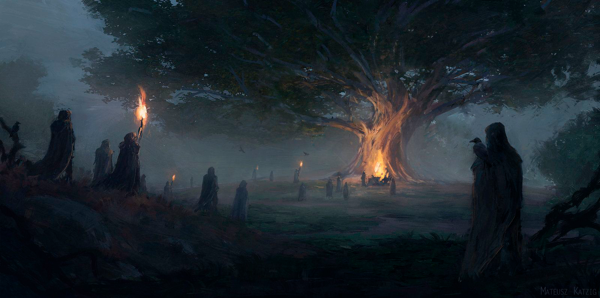

🏕️ Лес Крея
Запретный лес

Население: Неизвестно
Правитель: Нет
Основан: ...
Описание
Лес "Крея" - запретный лес, охраняемый древней магией. Вход в него разрешен лишь в сопровождении могущественных волшебников или друидов.
История
В давние времена его заполоняли энды и живые деревья. Всех, кто входил в этот лес, ждала лишь смерть. И лишь единицам удавалось безопасно выбраться из него.
Достопримечательности
- Лагерь ордена 4 волшебников
- Рунический лагерь друидов